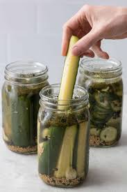

Qucik Refrigerator Dill Pickles

These crunchy quick refrigerator dill pickles are easy to make, and cure in the refrigerator for a day before they're ready. They're a great way to use the abundant cucumbers from your garden.
Ingredients
- 8 salad or pickling cucumbers, sliced into 3/4 inch pieces
- 2 garlic cloves
- 5 sprigs fresh dill
- 1/2 teaspoon black peppercorns
- 4 cups warter
- 3 tablespoons kosher salt
- 3/4 cup what vinegar
Directions
- Place half of cucumber slices in a large jar. Add garlic, dill, and peppercorns. Top with remaining cucumbers until the jar is filled tightly.
- Bring water, salt, and vinegar to a boil in a small saucepan, stirring occasionally, until salt is dissolved. Remove from heat and let cool 10 minutes. Pour warm mixture over cucumbers and seal jar. Refrigerate at least one day and up to 4 weeks.